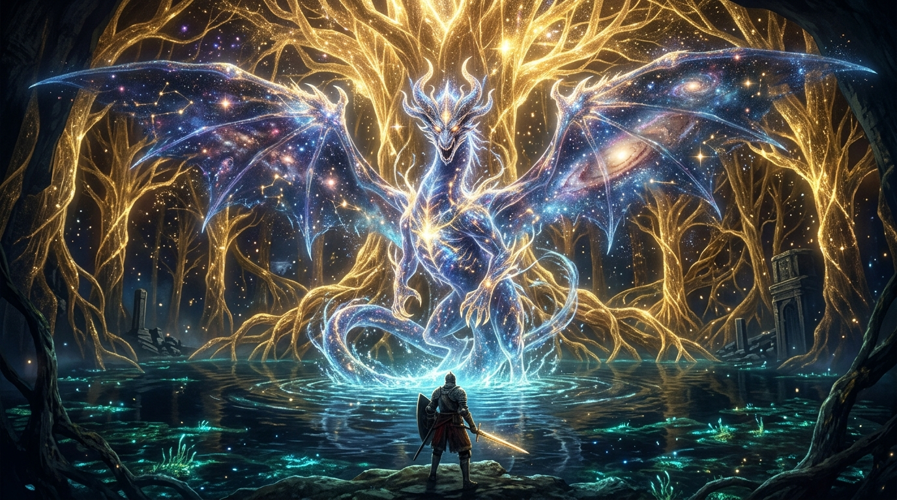

Godfrey: The First Elden Lord
Chosen by Queen Marika to spearhead the wars of the Erdtree, chieftain Hoarah Loux took upon his back the lion beast Serosh to suppress his primal fury. Follow his rise to godhood, his solo duel with the Storm Lord, and the tragic dimming of grace that birthed the Tarnished.